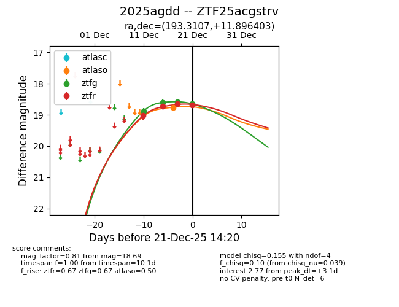
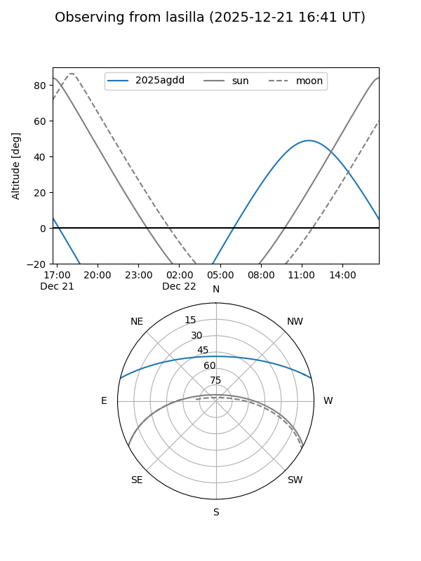
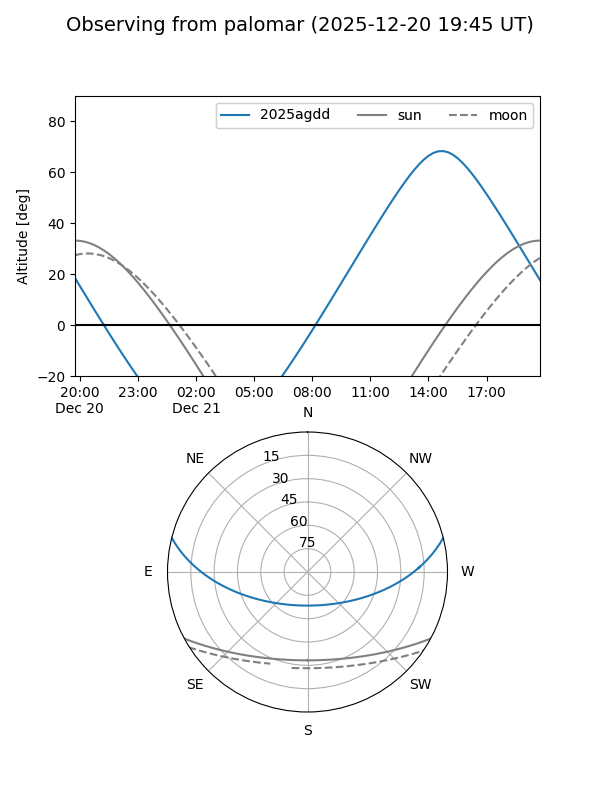
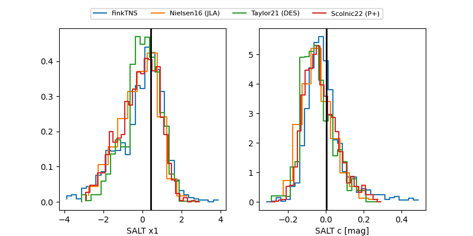

2025agdd
Target 2025agdd at 2025-12-21 13:02
Aliases and brokers:
FINK: fink-portal.org/ZTF25acgstrv
Lasair: lasair-ztf.lsst.ac.uk/objects/ZTF25acgstrv
ALeRCE: alerce.online/object/ZTF25acgstrv
TNS: wis-tns.org/object/2025agdd
YSE: ziggy.ucolick.org/yse/transient_detail/2025agdd
alt names
ZTF25acgstrv (ztf,fink_ztf)
2025agdd (tns,yse)
Coordinates:
equatorial (ra, dec) = 193.3107,+11.89640
equatorial (HMS+DMS) = 12:53:14.57,+11:53:47.05
galactic (l, b) = (304.6121,+74.76226)
Flags:
Photometry:
last atlaso=18.76, ztfg=18.64, ztfr=18.65
1 atlaso, 4 ztfg, 3 ztfr detections
Lightcurve

Visibility


Additional plots
